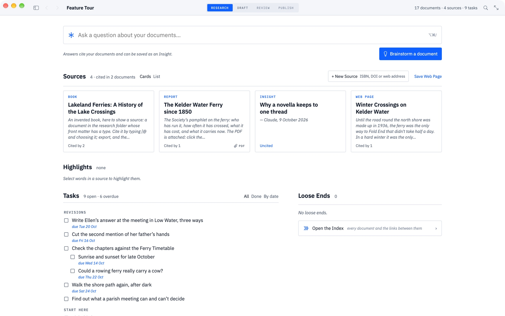

Citations in Markdown without BibTeX
You want to cite a paper in a Markdown document and have a reference list come out the other end. The standard answer involves a .bib file, a citation key, Pandoc and a CSL style sheet. Grasmere does it with a DOI.
The BibTeX way
BibTeX was made for LaTeX in the 1980s and it’s still what most Markdown citation tools expect. You keep a .bib file of entries, each with a key like field2019living, write [@field2019living, p. 12] in the text, and run Pandoc with --citeproc, a bibliography path and a CSL file for the style. It works, and it’s what Zettlr and the Obsidian plugins build on. It also means a second file to maintain, keys to remember, and a toolchain to keep working.
The other way: a source is a document
In Grasmere a source is a Markdown file of its own, in the project’s research folder, with the reference details as front matter and your notes beneath. You don’t write those files by hand.
- A paper: Project ▸ New Source, paste the DOI. The details come from Crossref or DataCite.
- A book: paste the ISBN. The details come from Open Library.
- A web page: paste the address. The page is saved to read offline, with its title, author and date.
- A PDF: drop it in the research folder. Grasmere looks for a DOI in its first pages and offers to make the source.
- A library you already have: Project ▸ Import Sources reads BibTeX, including Better BibTeX, and CSL JSON, which is what Zotero exports.
So BibTeX isn’t refused. It’s one way in, not the thing you maintain.

Citing
Type [@ in any document, or press ⌥⌘K, and pick the source from a list. What goes into the Markdown is a link to the source’s file.
Sourdough rises more slowly in winter [Field 2019, p. 12](../research/The%20Living%20Loaf.md).That’s still Markdown. Any editor shows it, and the link works in any app that follows links. Put two citations in your own parentheses to cite several works at once, and the usual locators are understood: p., pp., ch., para., sec. and so on.
The reference list
When you export to PDF or Word, or publish the whole project, you choose a style and each citation is written out in it, with a reference list at the end.
| Style | In the text |
|---|---|
| APA 7 | (Field, 2019, p. 12) |
| Harvard | (Field, 2019, p. 12) |
| Chicago author-date | (Field 2019, 12) |
| MLA 9 | (Field 12) |
The style is kept with the project, so every export uses the same one, and changing it changes every citation at once. There’s also “None (keep links)”, which leaves the citations as they are in the Markdown.
What this doesn’t do
Four styles are written, and they’re all author-date. Footnote styles such as Chicago notes and bibliography and OSCOLA aren’t supported, and neither are numbered styles such as Vancouver and IEEE. If you need one of those, or a journal’s own CSL file, Zettlr or Pandoc is the better tool. RIS and Zotero RDF files aren’t read, so export from Zotero as CSL JSON or BibTeX instead.
Questions
I have documents with [@key] citations already. Can I use them?
Yes. Import the .bib file, then Project ▸ Convert Pandoc Citations turns each [@key] into a link to the matching source.
Where are the reference details kept?
In the front matter of each source file: title, author, published, journal, volume, pages, doi and so on. You can read and edit them in any text editor.
Can I cite a web page I saved?
Yes, and the accessed date is filled in when it’s saved, which Harvard wants.
Does it need the internet?
Only to look up a DOI, ISBN or web address. Citing and exporting work offline.
References from a DOI, not a .bib file.
Grasmere is a Mac app for long writing in plain Markdown files, with sources, citations, review and publishing built in. Try it free for 14 days.
Download for macOS Free for 14 days, then $14.99 once · macOS 15+Related
- Grasmere vs Zettlr
- The Citations guide
- Markdown citations
- Using Zotero with Markdown
- Writing research papers in Markdown
- More on writing in Markdown
Last updated .